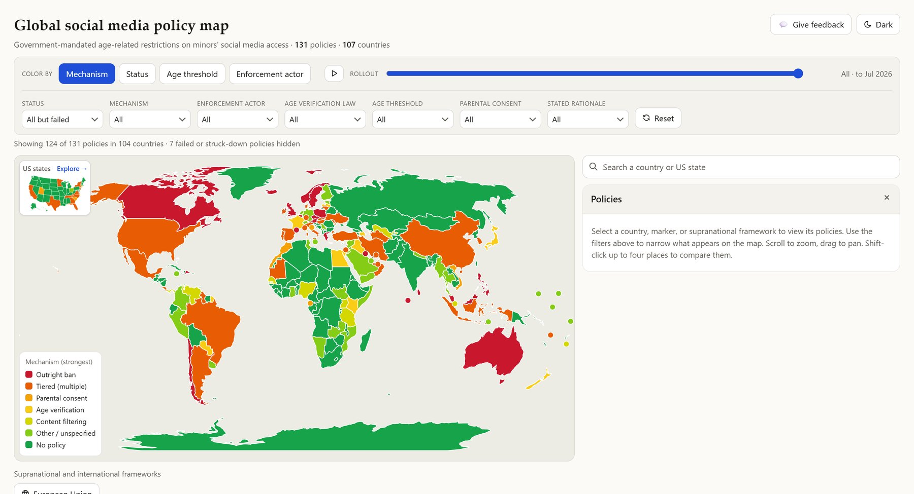
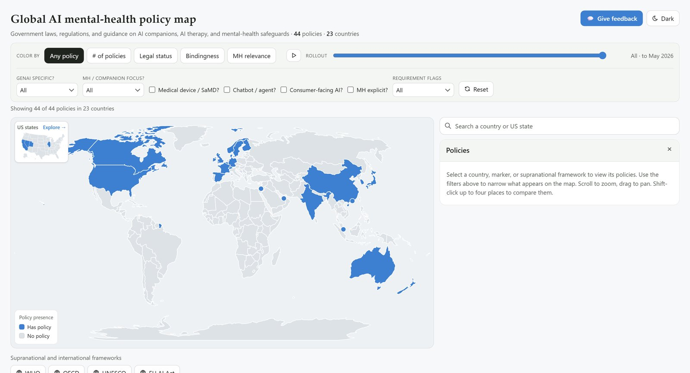
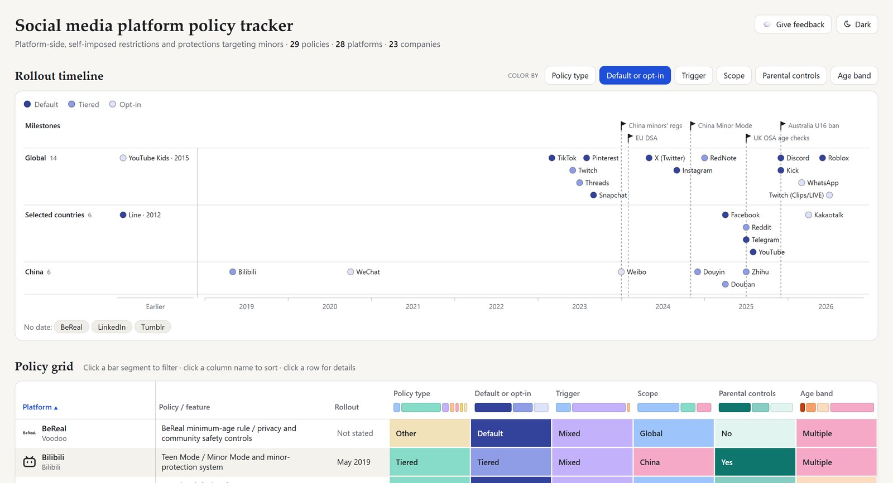

What are we trying to do?
Make the worldwide patchwork of laws on minors' social media access easy to explore, compare and keep up to date.
At the time of writing (October 2026), the dashboard tracks 131 government policies across 107 countries, drawn from the CHAT Lab's research dataset.

How is it done today, and what are the limits?
- Static reports and tables are authoritative on the day they are published and out of date soon after.
- News coverage follows individual laws, not the landscape, which makes cross-country comparison hard.
- Single scores or rankings are easy to map, but flatten very different legal instruments into one number.
- Visualizations built from exported data drift from the research dataset as it is corrected and extended.
What is new, and why should it work?
The dashboard is a live view over the team's dataset, organized around the three questions people actually bring to it.
- Live data. The dashboard reads the team's dataset directly, so a correction made by a researcher appears everywhere at once and the paper and the visualization cannot drift apart.
- Where: multi-attribute filtering on a world map, so the map answers a specific question instead of showing one blended score.
- When: a rollout timeline that shows how policies spread over time.
- How they differ: side-by-side comparison of two countries, attribute by attribute.
- A reusable framework. The same live-updating design now carries two companion datasets: government policy on AI and mental health, and platforms' own youth-safety policies.


Who cares, and what difference does it make?
Anyone who needs to know what the rules are, and how they compare, can find out in one place, current to the dataset.
- The research team gets a companion to the upcoming preprint that stays accurate after publication.
- Researchers in youth digital well-being get a shared reference for comparative work.
- Policymakers and regulators can see how other jurisdictions have approached the same problem.
- Journalists, educators and parents get a plain view of a fast-moving area.
What could go wrong?
- Risk
- Mitigation
- Different legal instruments are coded inconsistently
- A shared coding scheme, shown attribute by attribute rather than collapsed into one score
- The view goes stale
- A live connection to the research dataset instead of exported snapshots
- Readers over-interpret a colored map
- Filters that make each view answer one explicit question, and direct comparison for detail
- Slow loading on modest devices
- Compact map geometry and a static deployment
What does it take?
One developer, the team's dataset and open-source tools, deployed as a static site.
- People. Design and engineering by me, within a volunteer research role; data collection and coding by the research team.
- Software. Open-source libraries such as D3.js, so there are no licensing costs.
- Hosting. Static deployment on Vercel keeps running costs minimal.
How long does it take?
| When | Milestone |
|---|---|
| Jul 2026 | Joined the CHAT Lab. Design and build of the dashboard. |
| 2026 | Deployed with live updates, rollout timeline, filtering and comparison. |
| 2026 | Companion dashboards for AI mental-health policy and platform youth-safety policies, in development. |
| Next | Public release alongside the team's preprint. |
How do we know it is working?
Midterm checks
- Every record in the dataset appears in the dashboard and matches it
- Researchers can answer where, when and how-do-they-differ questions without help
Final checks
- The dashboard accompanies the published preprint
- The framework carries over to the two companion datasets without a rewrite